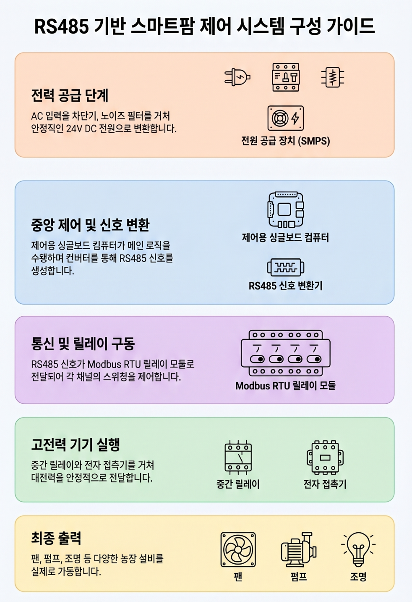

케이그린텍 스마트팜
📖 제품 소개
1. 제품 정보
| 제품명 | MARO-FARM26 |
|---|---|
| 제품 종류 | 스마트팜 복합환경제어기 |
| 지원 채널 | 4채널 · 8채널 · 16채널 · 32채널 (최대 256채널) |
| 연동 표준 | 국가스마트팜표준 KS X 3288 — RS485 Modbus 인터페이스 |
| 제조 | 케이그린텍 |
2. 작동 원리
비닐하우스나 온실의 환경과 양액을 자동으로 조절해 주는 장치입니다. 스마트폰·PC로 원격에서 제어할 수 있고, 센서가 측정한 값에 따라 기계가 알아서 동작합니다.
농가에 이미 설치되어 있는 수동 제어반·마그네트·컨트롤박스 의 ON/OFF 신호선에 본 제어기를 연결하기만 하면 됩니다. 기존 설비를 교체하지 않고 스마트폰 원격 제어 · 자동화 · 데이터 기록 기능을 그대로 얹을 수 있어, 초기 도입 비용이 크게 줄어듭니다. 수동 스위치는 그대로 살아있어 비상 시에는 사람이 직접 조작할 수 있습니다.
- 실시간 측정 (내부) — 온도, 습도, CO₂ 농도, 일사량, 토양 수분, EC / pH
- 실시간 측정 (외부) — 강우, 풍속, 외부 온도
- 자동 제어 — 측정값에 따라 천창·측창·펌프·환기팬·양액 도싱 등이 자동 동작
- 원격 모니터링 — 인터넷이 되는 곳이라면 어디서든 확인·제어
- 기존 설비 호환 — 농가의 기존 수동 제어반에 연결만 하면 원격·자동화 가능
표준 미지원 센서는 별도 변환 모듈 없이는 사용할 수 없으므로, 새 센서 도입 전 반드시 케이그린텍에 호환 여부를 확인해 주세요.
3. 시스템 구성도

[그림 1] 농장 제어기 본체 · 센서 · 릴레이 · 클라우드 · 사용자 단말 연동도
4. 주요 구성품
| 구성품 | 설명·규격 |
|---|---|
| 제어기 본체 | 산업용 싱글컴퓨터 — USB ↔ RS485 어댑터 내장 |
| 릴레이 모듈 | 산업용 RS485 릴레이 모듈 8CH (또는 4 / 16 / 32CH 확장) |
| 온습도 센서 | 산업용 RS485 온습도 센서 — 온도 ±0.3℃, 습도 ±2% |
| 양액 시스템 | EC / pH 센서, 6채널 도싱 펌프, 혼합 탱크, 14구역 관수 밸브 |
| 관리 웹앱 | 케이그린텍 클라우드 대시보드 (PWA — 스마트폰·PC 공통) |
5. 제원
| 항목 | 제원 |
|---|---|
| 제어 채널 | 4 / 8 / 16 / 32 (최대 256, 모듈 캐스케이드) |
| 통신 (장치) | RS485 Modbus RTU · 9600 baud · 8N1 (KS X 3288 표준) |
| 통신 (서버) | 클라우드 IoT MQTT (TLS 1.2) |
| 인터넷 | 유선 LAN 또는 Wi-Fi — 인터넷 끊김 시 농장 로컬 자동 전환 |
| 전원 | 5V DC 3A (본체) + 릴레이 모듈 별도 |
| 로컬 DB | SQLite — 인터넷 복구 시 클라우드 자동 동기화 |
| 자동화 | 센서 기반 / 시간대별 / 사용자 정의 (혼합 조건 가능) |
| 보안 | 장치별 IoT 인증서 발급 + JWT 사용자 인증 |
| 원격 점검 | 보안 원격 점검 VPN — 케이그린텍 기술 지원 시 사용 |
목차
1. 시작하기 — 로그인과 앱 설치
1.1 접속 방법
웹 브라우저(크롬·사파리·엣지)에서 케이그린텍이 안내한 농장 주소로 접속합니다.
1.2 로그인

1.3 스마트폰에 앱처럼 설치하기 (PWA)
스마트폰에서 한 번 설치해 두면 매번 주소를 치지 않아도 앱처럼 바로 열립니다.
안드로이드 (크롬)
아이폰 (사파리)
설치하면 이렇게 보입니다 — 휴대폰 화면 예시
홈 화면 아이콘을 누르면 일반 앱처럼 전체 화면으로 열립니다. 모바일에서는 메뉴를 좌측 상단 햄버거(☰) 안에 접어 두고, 본문은 세로로 한 줄씩 보기 좋게 정렬됩니다.

① 메뉴 열기
좌측 상단 ☰ 아이콘으로 전체 메뉴를 열어 농장관리·대시보드·환경제어 등으로 이동합니다. 메뉴 하단의 ‘종료’ 로 로그아웃합니다.

② 모바일 대시보드
오늘의 요약·시스템 상태 카드가 한눈에 들어오도록 세로로 정렬됩니다. 상단의 ‘로컬 전환’ 버튼으로 농장 와이파이 내부 제어로 전환할 수 있습니다.

③ 모바일 환경 제어
현장에서 바로 스마트폰으로 천창·측창·팬·펌프를 제어합니다. 버튼 크기가 손가락에 맞춰 커져서 야외에서도 누르기 쉽습니다.
1.4 화면 구성 한눈에
| 구역 | 설명 |
|---|---|
| 위쪽 메뉴 | 대시보드 / 제어 / 양액제어 / 영농일지 / 보고서 / AI / 설정 |
| 위쪽 우측 | 알림 종 모양 · 농장 이름 · 사용자 메뉴 (로그아웃) |
| 하우스 탭 | 하우스가 여러 개면 위쪽 탭에서 전환 |
2. 대시보드 보기
대시보드는 농장의 현재 상태를 한눈에 보여 줍니다. 로그인하면 가장 먼저 보이는 화면입니다.
2.1 화면 한눈에 — 전체 메뉴

화면 상단에는 농장 운영에 필요한 모든 메뉴가 한 줄로 배치되어 있습니다. 어느 화면에서든 이 메뉴를 눌러 바로 이동할 수 있습니다.
상단 메뉴 12개
| 메뉴 | 설명 |
|---|---|
| 🏡 농장관리 | 여러 농장을 가진 경우 농장을 전환·관리 |
| 📊 대시보드 | 환경값·시스템 상태·오늘의 요약을 한눈에 (현재 화면) |
| ⚙ 환경제어 | 천창·측창·팬·펌프 등 장치 직접 제어 (3장) |
| 💧 양액제어 | EC·pH 시나리오 기반 자동 양액 공급 (4장) |
| 📹 CCTV | 등록된 카메라 실시간 화면 |
| 📓 영농일지 | 작업·관찰·자재 기록 (5장) |
| 📈 보고서 | 환경·수확·자재 데이터 출력 (6장) |
| 🤖 AI도우미 | 병해충 진단·재배 상담 (7장) |
| 🖥 서버 | 제어기 상태·통신 진단 (관리자용) |
| 🔧 설정 | 하우스·센서·자동화 규칙 등록 (8장) |
| 🔔 알림 | 경보·이상 상태 모음 |
| 👤 관리자 | 사용자 관리·권한 설정 |
대시보드 화면 구역
- 농장 선택 — 화면 좌측 상단 (예:
farm_0001 스마트팜). 여러 농장을 가진 경우 드롭다운으로 전환. - 하우스 탭 — 1번 하우스 / 2번 하우스 … 가로 탭. 우측 ‘호텔 전환’ 버튼으로 보기 모드 변경.
- 오늘의 요약 — 데이터 수집 건수·전체 알림·심각·경고 4개 카드. 모두 0이면 “오늘은 이상 없이 정상 운영 중”으로 표시.
- 시스템 상태 — 센서 상태(정상/이상), 활성 센서 수, 미확인 알림, 수집 주기(기본 60초).
- 센서별 실시간 — 등록된 센서마다 현재값을 표시 (온도·습도·EC·pH 등).
2.2 환경 위젯

위쪽에는 현재 환경값(온도·습도·CO₂·일사량·EC·pH 등)이 큰 게이지로 표시됩니다. 게이지 색으로 안전 / 주의 / 위험 상태를 바로 알 수 있습니다.
| 색 | 의미 |
|---|---|
| 초록 | 정상 범위 |
| 노랑 | 주의 — 목표값에서 약간 벗어남 |
| 빨강 | 위험 — 즉시 확인 필요 |
| 회색 | 데이터 미수신 (1~2분 후 회복되는 경우가 많음) |
2.3 추이 그래프

아래쪽에는 최근 24시간 추이 그래프가 항목별로 표시됩니다. 그래프를 누르면 1시간 / 1일 / 1주 단위로 확대해서 볼 수 있습니다.
2.4 하우스 전환
하우스가 여러 동이면 화면 위쪽 하우스 탭으로 전환합니다. 하우스마다 위젯 구성을 다르게 둘 수 있습니다.
3. 환경 제어
천창·측창·환기팬·관수밸브 같은 장치를 직접 켜고 끌 수 있습니다. 자동화 규칙을 켜 두면 평소에는 자동으로 동작하고, 임시로 조작이 필요할 때만 이 화면을 씁니다.
3.1 제어 화면 들어가기

3.2 위쪽 3개 버튼
| 버튼 | 의미 |
|---|---|
| ⏹ 비상정지 | 동작 중인 모든 장치를 즉시 멈춥니다. 위급 상황에만 사용. |
| ▶ 자동화 | 자동화 규칙이 동작 중임을 표시. 일시적으로 끄고 켤 수 있습니다. |
| ‖ 수동모드 | 자동화를 잠시 멈추고 수동으로만 조작. |
3.3 장치별 명령
| 장치 종류 | 명령 |
|---|---|
| 1창·측창·천창·차광·스크린·관수밸브 | ▲ 열기 / ■ 정지 / ▼ 닫기 — 양방향 동작 |
| 펌프·모터·조명·팬·온풍기·냉방기·CO₂공급기 | ● 동작중 / ○ 꺼짐 |
각 장치 카드 오른쪽 위의 ‘수동’ / ‘대기’ 표시는 그 장치가 자동화 대상인지 사람이 조작 중인지를 알려 줍니다.
3.4 자동 정지 (창문류)
측창을 ‘▲ 열기’로 누르면 설정해 둔 시간(예: 15초)만큼만 동작하고 자동으로 정지합니다. 그 사이에 다시 누르면 즉시 멈춥니다. 카드 가운데의 ‘0%’ 표시는 현재 몇 % 열려 있는지 보여 줍니다.
3.5 진행 막대 자동 복원
창문이 동작 중일 때 페이지를 잠시 떠났다가 돌아와도 경과 시간이 자동 계산되어 진행 막대가 이어서 보입니다.
3.6 인터넷이 끊긴 경우
외부 인터넷이 끊겨도 같은 와이파이에 있으면 농장 내부에서 직접 제어할 수 있습니다. 화면이 ‘팜로컬 모드’로 바뀌고 제어는 정상 동작합니다.
4. 양액 제어
양액 제어는 베드별 EC · pH를 측정하면서 도싱 펌프(A · B · 산 · 알칼리)로 양액을 자동 조성하고, 관수 밸브 그룹으로 베드를 순차 공급하는 기능입니다. 시나리오로 작물별 EC · pH 목표를 저장해 두고 자동 / 수동 / 직접 세 가지 모드로 운용합니다.
4.1 양액 제어 화면 들어가기
4.2 세 가지 운용 모드
| 모드 | 설명 | 언제 쓰나 |
|---|---|---|
| 자동 | 자동실행 스케줄에 따라 시나리오를 순차 반복 실행 | 평상시 24시간 운용 |
| 수동 | 시나리오 1개를 골라 지금 1회 실행 | 특정 베드에 임시 공급 |
| 직접 | 도싱 펌프·관수 밸브를 사람이 직접 ON/OFF | 점검·청소·EC/pH 보정 |
4.3 자동 모드

자동 모드 카드에는 현재 진행 중인 시나리오와 사이클 단계(혼합 → 공급 → 휴식)가 표시됩니다. 단계 아이콘 아래 진행 막대로 현재 위치를 확인할 수 있습니다.
- 현재 시나리오 — 자동실행 스케줄 큐의 첫 항목
- 다음 시나리오 — 시간이 되면 자동 전환
- 일시정지 — 현재 사이클이 끝난 후 안전하게 멈춤
4.4 수동 모드

수동 모드에서는 시나리오 목록 중 하나를 골라 지금 한 번만 실행합니다.
4.5 직접 모드

도싱 펌프 A · B · 산 · 알칼리와 관수 밸브를 사람이 직접 켜고 끄는 모드입니다. 점검 · 청소 · 캘리브레이션 용도로만 사용하세요.
4.6 양액 설정 들어가기

양액제어 화면 오른쪽 위 설정 탭을 누르면 양액 시스템의 모든 설정 화면으로 이동합니다.
4.6.1 시나리오 설정

작물·생육 단계별 양액 조성을 시나리오로 저장합니다. 시나리오마다 EC · pH 목표, 사이클 시간(혼합·공급·휴식), 적용 구역을 지정합니다.
4.6.2 자동실행 스케줄

자동 모드에서 시나리오를 어떤 순서로 반복할지 큐를 설정합니다. 14개의 시간 슬롯을 지정할 수도 있고, 단순 순환 큐로 동작시킬 수도 있습니다.
4.6.3 구역 설정

관수 밸브를 그룹으로 묶어 구역(베드)을 만듭니다. 구역마다 작물 품목·식재 수·공급량 배수(표준·많음·적음)를 등록합니다.
4.6.4 도싱 탱크

탱크 용량·잔량·교체 주기를 관리합니다. 잔량이 일정 수준 아래로 내려가면 알림이 발송됩니다.
4.6.5 릴레이 매핑

도싱 펌프·관수 밸브가 어떤 릴레이 채널에 연결되어 있는지를 지정합니다. 설치 시 한 번 설정해 두고 이후엔 거의 변경하지 않습니다.
4.6.6 경보 한계선

EC · pH의 상·하한 임계값을 설정합니다. 한계를 벗어나면 양액 공급이 자동 정지하고 알림이 발송됩니다 (안전 인터록).
4.6.7 경보 이력

발생했던 경보를 시간 순으로 확인하고 처리 상태(확인 · 해결)를 기록합니다.
4.6.8 센서 보정

EC · pH 센서는 시간이 지나면 값이 조금씩 어긋납니다. 표준 용액(EC 1.41 mS/cm, pH 4.0 / 7.0)으로 분기마다 보정해 주세요.
4.6.9 설비 시스템

혼합 탱크 용량·펌프 유량·관수 시간 같은 설비 사양을 등록합니다. 사이클 시간 자동 계산의 기초가 됩니다.
4.7 안전 인터록
양액 시스템은 다음 상황에서 자동 정지합니다.
- EC · pH가 경보 한계선을 벗어남
- 도싱 탱크 잔량이 최소 한계 이하
- 혼합 사이클이 최대 시간을 초과 (목표 EC · pH 도달 실패)
- 제어기와 릴레이 통신이 일정 시간 끊김
5. 영농일지
매일의 작업·관찰·자재 사용 기록을 남기는 곳입니다. PLS(농약허용기준 강화) 대응을 위해 농약 사용은 별도 항목으로 기록합니다.
5.1 영농일지 화면

왼쪽에는 일지 목록, 오른쪽에는 선택한 일지의 상세 내용이 표시됩니다. 위쪽에서 날짜 범위·작목 으로 필터할 수 있습니다.
5.2 일지 쓰기
5.3 사진 첨부 — 위치 자동 기록
스마트폰에서 사진을 찍어 첨부하면 촬영 위치(GPS) 가 자동 기록됩니다. 일지를 나중에 봐도 어느 하우스 / 어느 베드에서 찍었는지 알 수 있습니다.
5.4 자재(비료·농약) 입출고
비료·농약·종자의 입고와 사용을 기록할 수 있습니다. 농약은 사용 시 품목명·희석배수·살포 작목·살포 면적·살포자 가 필수입니다 (PLS 대응).
5.5 수확 기록
수확량·등급·출하처를 기록합니다. 누적 수확량은 6장 보고서에서 작목별로 자동 집계됩니다.
6. 보고서 출력
환경·제어·자재·수확·알림 데이터를 기간별로 묶어 보고서로 출력합니다. 농업기술센터 제출, 출하 거래처 보고용으로 활용할 수 있습니다.
6.1 보고서 4개 탭

| 탭 | 내용 |
|---|---|
| 📊 환경 데이터 | 온도·습도·CO₂·일사량 등의 일별·시간별 통계 |
| 🌱 작목 / 수확 | 작목별 누적 수확량·등급·출하 이력 |
| 🧴 자재 사용 | 비료·농약·종자의 입고·사용 이력 (PLS 대응) |
| 🔔 알림 이력 | 발생했던 모든 알림 (8장 알림 설정 참고) |
6.2 보고서 만들기

7. AI 도우미
병해충 사진 진단·재배 상담·이상값 분석 등을 AI에게 물어볼 수 있습니다. 한국어로 자연스럽게 대화하면 됩니다.
7.1 AI 화면

7.2 사진으로 병해충 진단
7.3 채팅으로 묻기
사진 없이 글로 묻는 것도 가능합니다.
- “토마토 EC 목표는 보통 얼마인가요?”
- “밤 온도가 자꾸 떨어지는데 가능한 원인은?”
- “오이 새순이 노랗게 변했어요. 원인이 뭘까요?”
8. 설정 관리 농장대표 전용
하우스·센서·카메라·자동화 규칙을 등록·수정합니다. 농장대표 권한이 있어야 접근할 수 있습니다.
8.1 하우스 / 센서 설정

하우스 이름·면적·작목을 입력하고, 어떤 센서를 어디에 설치했는지 등록합니다.
8.2 센서·장비 등록

온습도·CO₂·EC/pH·풍속 등 센서와 천창·측창·펌프·팬 같은 장비를 등록합니다. 장비마다 Modbus 채널과 동작 시간을 지정합니다.
8.3 자동화 규칙 — 센서 기반

‘온도 30℃ 초과 → 측창 열기’ 같은 규칙을 만듭니다.
8.4 자동화 규칙 — 시간대별

‘아침 7시에 측창 열기’, ‘저녁 6시에 측창 닫기’ 같은 규칙을 만듭니다. 시작 시각이 종료 시각보다 늦으면 자정을 넘어가는 규칙으로 자동 처리됩니다 (예: 18:00 ~ 06:00).
8.5 카메라 등록

RTSP 주소가 있는 IP 카메라를 등록하면 대시보드에서 실시간 화면을 볼 수 있습니다. 카메라 위치(예: 1동 입구·2동 중앙)도 함께 입력하세요.
9. 자주 묻는 질문 (FAQ)
Q1. 화면이 하얗게 나오고 안 떠요
① 새로고침(F5 또는 ↻).
② 그래도 안 되면 인터넷 연결을 확인.
③ ‘화면 표시 오류’ 박스가 보이면 ‘새로고침’ 버튼을 눌러 주세요.
Q2. 비밀번호를 잊어버렸어요
같은 농장의 농장대표에게 사용자 관리에서 비밀번호 재설정을 요청하세요. 농장대표 본인 비밀번호 분실은 케이그린텍에 연락 주세요.
Q3. 센서 값이 ‘--’ 로만 보여요
① 1~2분 대기.
② 5분 이상 그대로면 오프라인 알림이 옵니다.
③ 농장 공유기와 제어기 본체(까만 박스)의 전원을 확인.
④ 그래도 복구가 안 되면 10장 연락처로 문의하세요.
Q4. 제어 버튼을 눌러도 장치가 안 움직여요
① 위쪽 ‘알림’ 에 ‘오프라인’ 알림이 있는지 확인.
② 같은 와이파이에 있다면 ‘팜로컬 모드’ 로 자동 전환되어 동작합니다.
③ 외부 인터넷·내부 와이파이 둘 다 끊긴 경우에는 케이그린텍에 연락.
④ 다른 사용자가 동시에 같은 장치를 조작하면 마지막 명령만 적용됩니다.
Q5. 자동화 규칙이 작동을 안 해요
① 규칙 옆 토글이 켜짐(파란색) 인지 확인.
② 시간 조건은 제어기 본체 시간 기준 — 농장 시간대 확인.
③ 쿨다운 시간 안에 있으면 다음 실행까지 기다려야 합니다.
④ 설정을 바꾼 뒤 ‘제어기 동기화’ 를 눌렀는지 확인.
Q6. 양액 자동 운전이 멈췄어요
① 4.7 안전 인터록 상황 중 하나일 가능성이 큽니다.
② 경보 이력(4.6.7) 에서 원인을 확인하세요.
③ 도싱 탱크 잔량, EC/pH 한계선, 센서 보정 상태를 점검합니다.
④ 원인 해소 후 모드바에서 자동 을 다시 누르면 재가동됩니다.
Q7. 사진을 올렸는데 위치가 안 찍혔어요
스마트폰 브라우저에서 위치 권한이 차단 되어 있을 가능성이 큽니다.
① 크롬: 주소창 왼쪽 자물쇠 → 사이트 설정 → 위치 → 허용
② 사파리: 설정 → 사파리 → 위치 → 허용
Q8. 알림이 너무 많이 와요
알림 설정에서 임계값을 조정하거나 자주 발생하는 항목의 쿨다운을 늘려 주세요. 근본적으로 자동화 규칙으로 환기·차광을 자동 동작하게 만들면 알림이 줄어듭니다.
Q9. 농장이 여러 곳인데 한 화면에서 보고 싶어요
위쪽 ‘농장 선택’ 드롭다운에서 농장을 전환할 수 있습니다. 한 화면에 여러 농장을 비교하는 기능은 관리직원·최고관리자 권한에서만 제공됩니다.
Q10. 인터넷이 자주 끊기는데 데이터가 사라지나요?
아닙니다. 농장 제어기 본체가 데이터를 자체 저장 하고, 인터넷이 복구되면 자동으로 서버에 보냅니다. 단, 영농일지·수확 기록은 작성 즉시 서버에 저장되므로 작성 시점에는 인터넷이 필요합니다.
10. 문제 신고와 연락처
10.1 신고하실 때 알려 주실 정보
아래 정보를 함께 알려 주시면 빠르게 도와드릴 수 있습니다.
- 농장 이름 / 농장 ID
- 발생 시간 (대략적으로)
- 어떤 화면에서 / 어떤 동작을 했을 때
- 가능하다면 화면 사진(스마트폰으로 캡처)
- 인터넷·전원 상태 (점검해 보셨다면)
10.2 연락처
| 구분 | 연락처 |
|---|---|
| 전화 | 070-5043-8158 / 010-5625-7978 |
| 이메일 | afocus@naver.com |
| 홈페이지 | https://www.k-greentech.com/ |
| 주소 | 경기도 안양시 만안구 전파로 53 (태광산업 별관), 303B |
10.3 정기 점검 권장 주기
| 항목 | 권장 주기 |
|---|---|
| EC · pH 센서 보정 | 3개월 |
| 도싱 탱크 잔량·교체 | 1개월 (탱크 알림에 따라) |
| 창문 모터·체인 점검 | 6개월 |
| 제어기·릴레이 박스 청소 | 6개월 |
| 비밀번호 변경 | 6개월 |
| 전체 시스템 점검 (케이그린텍) | 12개월 |
케이그린텍 스마트팜 사용자 매뉴얼 · 2026년 5월
본 매뉴얼은 케이그린텍의 자산이며, 무단 복제·배포를 금합니다.